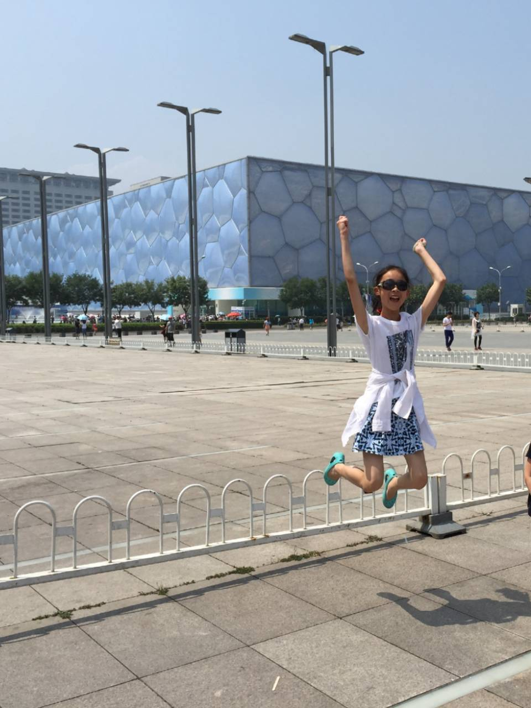
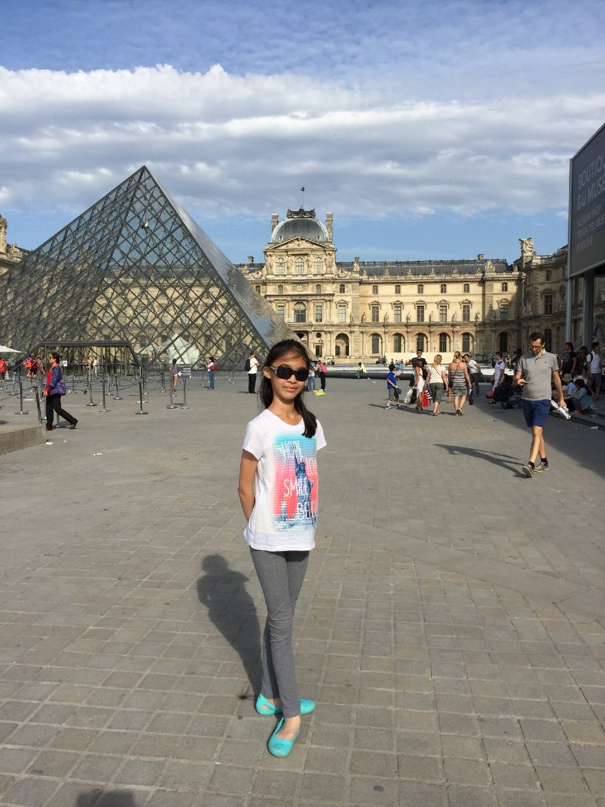
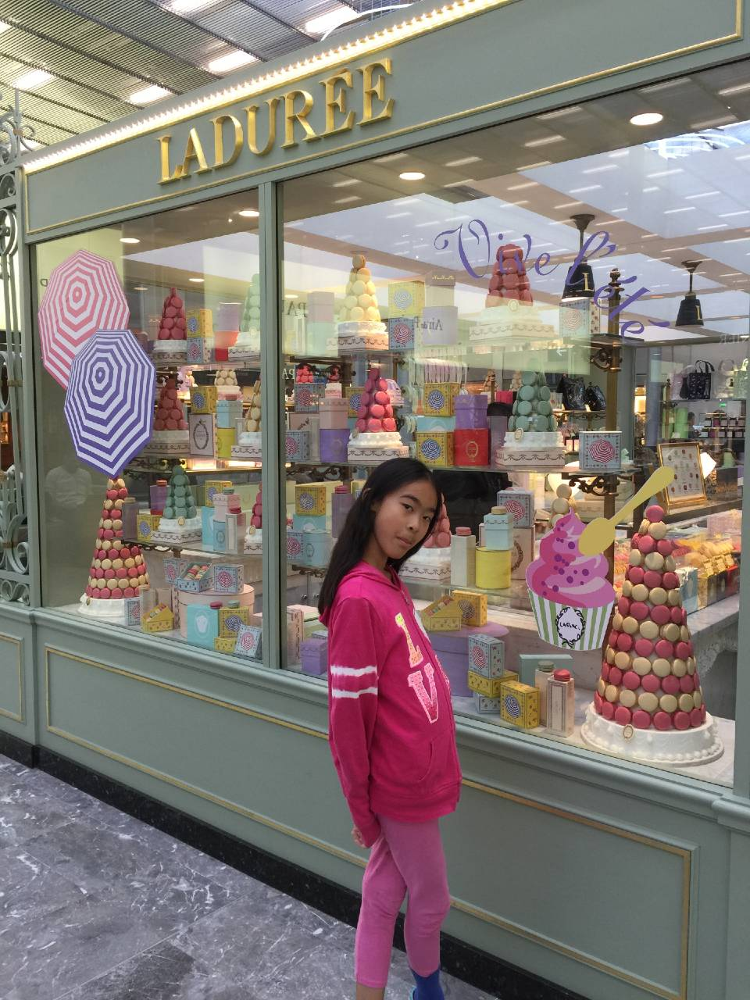
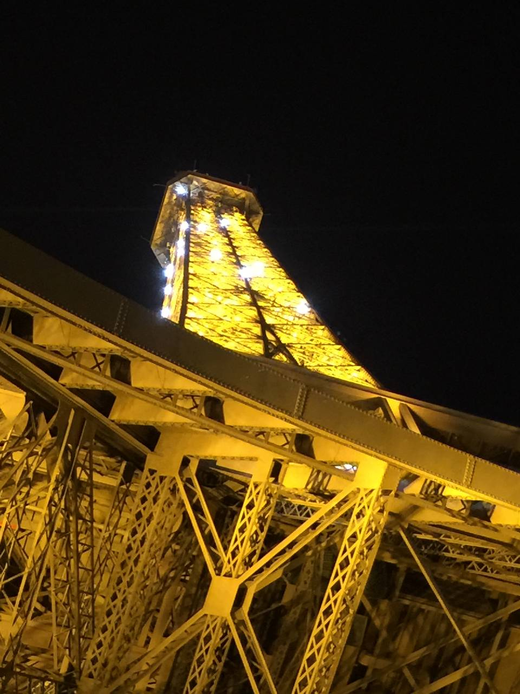
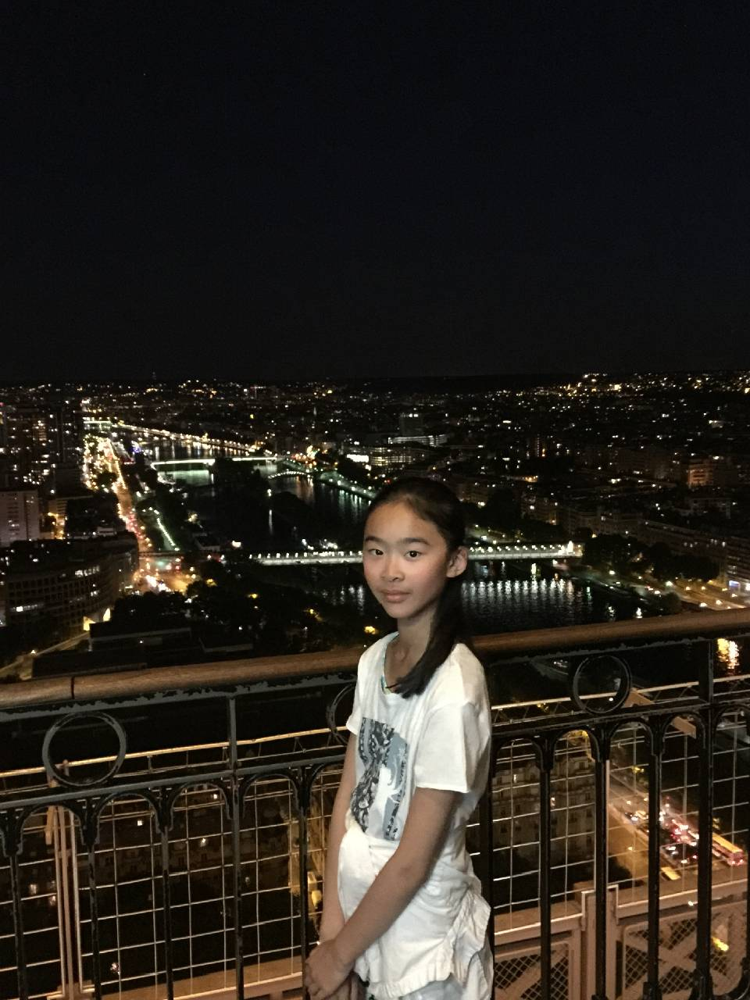
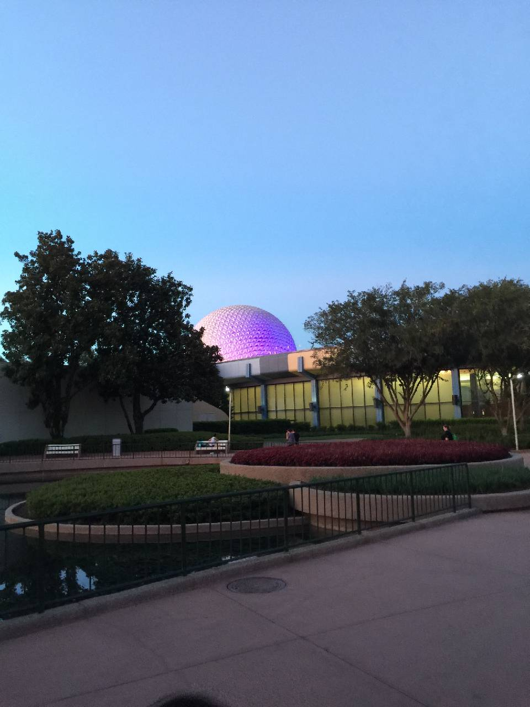
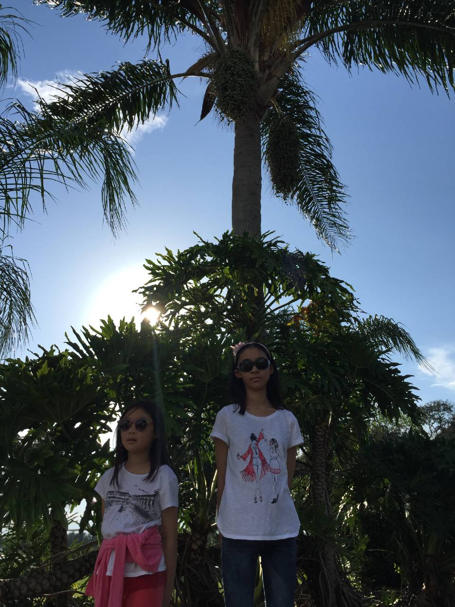
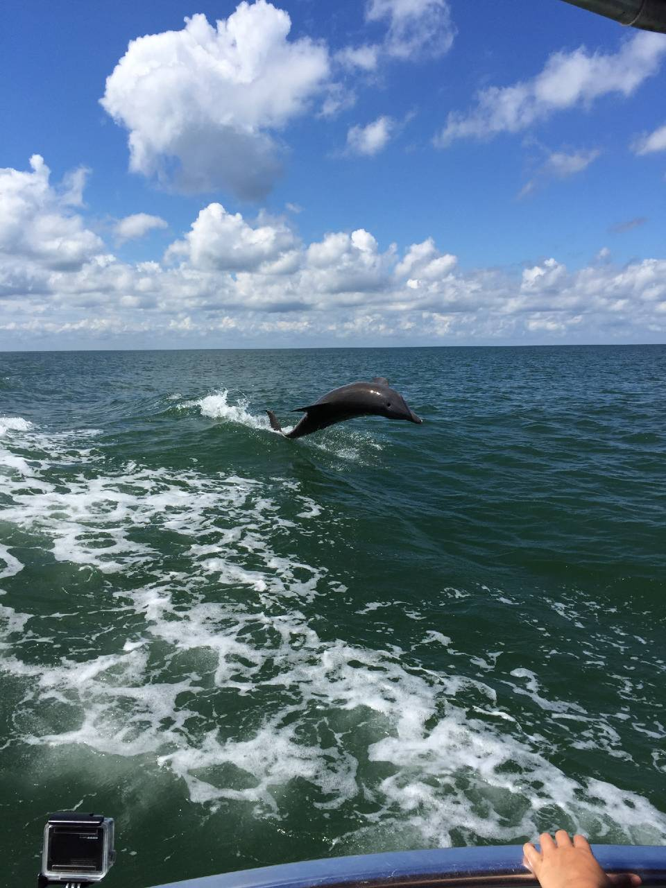

| Location | Images | Memories |
|---|---|---|
China
|
 |
In Beijing, one of the places we went to was the Great Wall of China. It was fun climbing the stairs up the wall, and my sister and I might have gone a little too fast and left our mom behind a few times... This was when I started jumping up in every photo, wanting to be captured in mid-air. Hence, all these fun photos. |
France
|


  |
I've always wanted to go to Paris, so when we did, I was super happy. We went to the Louvre museum and saw the Mona Lisa, but that museum is huge, and so we didn't get to see much else. One thing I absolutely will never forget is the macarons!! The ones from Paris were the best, and no other macarons I've tasted elsewhere are quite the same. The next thing I probably won't forget is the Eiffel Tower. We visited at nighttime, so the lights were on and flashing. The view of the city with all the lights on was really fascinating, too. |
USA
|

  |
When we went to Orlando, we went to Epcot and Magic Kingdom. I love roller coasters and other amusement/theme park rides, so I had plenty of fun. We also had a special dinner inside Cinderella's castle in Magic Kingdom, which is why I am wearing a dress in that picture. The Disney parks weren't the only places we went to; we were at a mall when we saw that big M&M. We also went to Clearwater Beach, and went to see dolphins out on the water. This beach was a seawater beach, and I didn't like the saltiness of the water when I first went swimming. |